Brooklands October 8th 2000
This was by far the biggest turn out of Tipo 16V cars to date.
Several owners met up at various points around London before
decending on the Toby Jug car park in Tolworth on the A3.
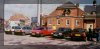
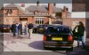
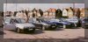
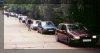
There were
so many of us (
Keith Meredith,
Roy Tomlinson,
Mike Jukes,
Alex Wakefield,
Alexis Grant,
Andy Whittle,
Nareman Virk,
Baber Sheikh,
Martin Hodges,
Ian Grist,
George Roberts,
Andy Forsdyke and myself
) that I was concerned we wouldn't fit into the pub's car park.
Once we'd all arrived we headed off towards Brooklands in convoy. This was slightly difficult
since the junction leaving the pub was very busy and we got split up a bit. However
by the time we arrived at Brooklands we'd all grouped back up as you can see from
the pictures.
Phil Ward, the editor of AutoItalia magazine had reserved a space for us
next to the Fiat Puntos and opposite the Fiat Cinquecentos. There were too many
Tipos for a single line so after a bit of manuvering we had a nice 'J' shaped display
which looked pretty impressive. A short time later
Alex Meyrick joined the display. We
now had a grand total of 14 Tipo 16Vs.
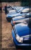
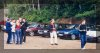
We spent some time examining one anothers cars as several owners had been working on
special modifications for the meeting. These had been kept top secret until the day
so it was quite interesting to see what one another had been up to:
- I had replaced the square black plastic grill mesh with diagonal wire mesh. I'd also
cut away a large area of the front bumper between the fog lights and replaced
with black wire mesh. This gives the car a more aggressive look as well as keeping
the engine much cooler.
- Alexis had treated himself to some new 15" Integrale style wheels. He'd
also colour coded his door handles and fitted a pipe to move his K&N air filter
into the front wing where it picks up nice cold air.
- Nareman had brought the Fiat Coupe interior off George and fitted it into his Tipo. He had
also removed the inner door lock pins and replaced them with alarm leds.
- Martin had fitted a 4" pipe from behind the front bumper up to and over
his K&N to keep it cold and shield it from the heat of the engine.
- George had colour coded his wheels with a subtle shade of blue.
If I've missed off anyone's modifications then please let me know.
There were some spectacular looking Punto's on display. Beautiful condition, huge wheels
and retrimmed interiors. These guys have it easy through as the body kits and parts
are readily available it's just a matter of putting the right combination together.
With some time to spare several of us had a look inside the museum which was
fascinating. Amongst other items on display, in the 'Bellman' aircraft hanger,
was a WWII Wellington Bomber 'R for Robert' that ditched in Lock Ness. They had pulled
it out in 1985 and have restored it. Most of the fabric skin to the airframe
had rotted. However this made it all the more interesting to see the inner workings
pf the aircraft and the
cramp conditions the flight crew had to move around in.
You'll find more information about
Brooklands
here.
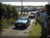
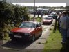
Parked up around the site were all sorts of Italian cars including Fiat, Lancia, Masserati,
Ferrari, Lamboughini. These weren't just for show though as entertainment
was laid on in the form of a hill climb. A test hill was constructed in 1909 for
acceleration and braking tests. It's gradients range from 1-in-8 at the bottom to
1-in-4 at the top. The record for cars was set by R.G.J. Nash at 7.45
seconds in a Frazer Nash in 1932. Phil Ward asked for several cars from each model
to drive up this hill as fast as they wanted. Alexis, Martin and Alex volunteered
to take part. They had two runs up the hill each and all survived which is more than
could be said for a certain Lamboughini Countach. Videos of all these cars will be
available shortly.
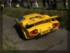
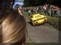
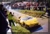
The weather held out for us and owners drifted away during the day. However I did
manage to take some group shots before the last of us went home.
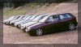
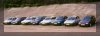
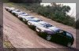
From the feedback I
got I think everyone enjoyed the day:
- Roy wrote "Best Sedici turn out yet.
Nice meeting you all again".
- Alex wrote "
I think most of us said this already but I'll say it again, thanks
for sorting out a great meeting yesterday, and in fact all the meetings so
far this year!
These meetings have made my first sedici year a real pleasure,
and it's great to get much more involved in the whole Italian car scene rather
than just commuting in my teapot. Certainly a year ago, when I was driving round in my
humble Clio, I didn't think that within another year I'd get waved up the
Brooklands test hill in my car following in the footsteps (ahem) of Lambos
and Ferraris.
I think momentum is really picking up with the whole 'club' thing, as was
proved in no uncertain terms yesterday, with a big turnout.
"
- Mike wrote "Brooklands was a great day out, thank you for
organising it, my fiance had a lovely time".